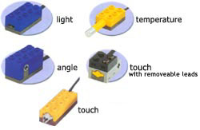
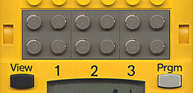

|
|
Start of Tutorial > Start of Trail |

Sensors are the senses of your robot, which enables it to generate an inner model of its
environment and to react to events accordingly.
There's a bunch of hardware sensors available which may be connected to one of the three
gray ports mounted above the RCX's display:

Similarly to the motor ports, the three ports are implemented as static fields
of the Sensor class:
Sensor.S1.readValue();
Sensor[] array, which contains the three sensors.
Sensor
public static void setTypeAndMode(int aType, int aMode) method, where
type is one of the five types
mode can be set to
Sensor.setPreviousValue(0) before starting new measurements.
When configuring the sensor make sure that you use a meaningful combination of mode and type else the measured value won't make much sense.
Sensor.activate() the sensor port in question is "switched on" in a sense
that it constantly toggles between supplying power to the connected sensor and reading
data (the light sensor's electronics smoothens out this toggling so you won't notice it).
Sensor.passivate() method turns off this power supply.
read...() methods:
There's is an additional low-level API method
public static int readSensorValue(int aSensorId,int aRequestType)
where aSensorId is the sensor's id (0,1,2) and
aRequestType is the type of data to read (0 = raw value,
1 = configured value,2 = boolean value).
In most cases, though, you might want to be notified when some sensor is "triggered"
or measures a certain value.
For such cases you will use Java's event listener technology:
Your class to listen for such a sensor event will implement the
public void stateChanged(Sensor aSource, int aOldValue, int aNewValue) method
of the josx.platform.rcx.SensorListener interface, where the two
value parameters reflect the value before and after the change in value measurement:
public class MySensorListener implements SensorListener {
public void stateChanged(Sensor aSource, int aOldValue, int aNewValue) {
// respond to sensor value change here
} // stateChanged()
} // class MySensorListener
Sensor.S1.addSensorListener(mySensorListener);
stateChanged() method of the
MySensorListener will be called.
If you are unfamiliar with event listeners, feel free to consult the section of The Java Tutorial™ in question.
ProximitySensor which tackled that issue
was added to the josx.platform.rcx package.
Sensor class, but is constructed with one.
In the constructor you also might set the threshold, a integer value which defines
the distance to an object by which the sensor is triggered: the bigger the value, the
closer the robot gets.
waitTillNear(long aMilliseconds)
method which blocks the current thread until an object is detected; the parameter defines
how long may be waited, where 0 means forever (until an object is in fact detected).
examples/rotator
section of the leJOS tree.
|
|
Start of Tutorial > Start of Trail |